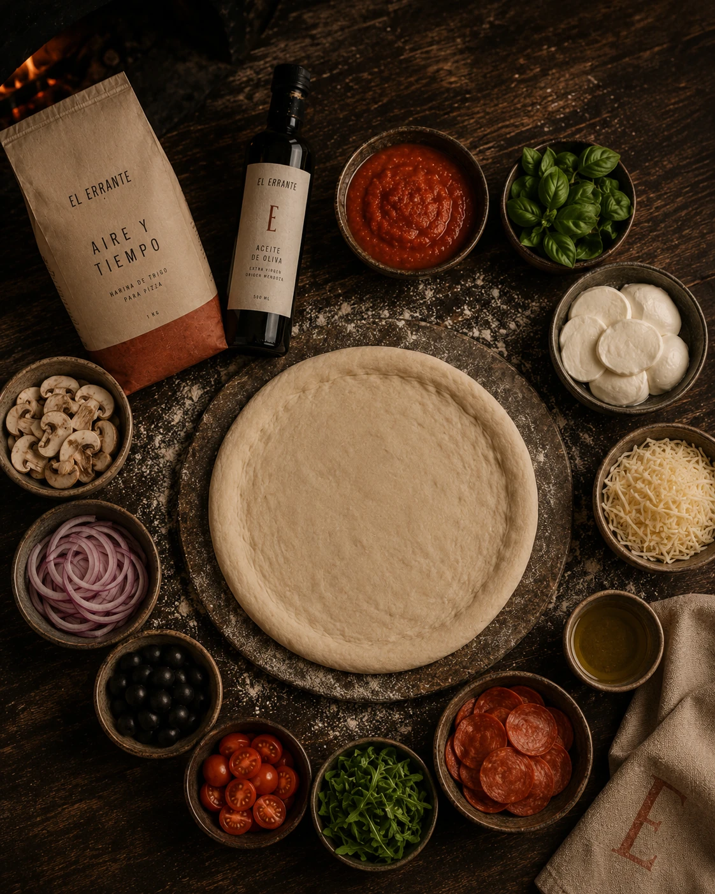

El Errante En Casa
Nosotros hacemos el tiempo.
Tú completas el fuego.
Masa, fermentación, apertura y primera cocción ocurren antes. Tu horno entra al final, en una transformación breve y decisiva.
En Casa es la línea. Segundo Fuego es la investigación detrás.
Por qué existe este formato
Tu horno no necesita comportarse como el nuestro.
Nuestros hornos pueden trabajar en un entorno de alta temperatura cercano a los 400 °C; un horno doméstico opera bajo otras condiciones. Diseñamos el producto aceptando esa diferencia.
El primer fuego resuelve expansión, estructura y parte del manejo de humedad. Luego llegan enfriamiento, estabilización y congelación. El segundo fuego completa la transformación con el equipo que realmente tienes.
Terminar, no simplemente recalentar: el producto fue pensado desde el comienzo para tener dos fuegos.

Las pizzas
Cinco perfiles.
Un último fuego.
De la claridad de una Margherita a la firma de La Errante. Cada ficha explica qué vas a comer, cómo se siente y cómo terminar la versión vigente.
Lo que ocurrió antes
Hay bastante cocina detrás de una preparación breve.
El detalle cambia por referencia y versión. La lógica es asumir antes aquello que exige más control y dejar en casa un último gesto claro.
Formulamos
Harina, agua, sal, fermentación y manejo se ajustan al recorrido completo del producto.
Fermentamos y leemos
El reloj organiza; la masa confirma cuándo está lista para la siguiente decisión.
Construimos la forma
División, boleado y apertura organizan tensión, gas y espesor.
Primer fuego
La alta temperatura fija parte de la estructura necesaria para esperar y volver al calor.
Segundo Fuego
No congelamos una pizza terminada. Diseñamos una pizza para terminarse dos veces.
Segundo Fuego es el nombre que damos a la investigación detrás de En Casa.
No reemplaza el nombre de la línea ni las instrucciones del producto. La identidad permanece; la ingeniería puede cambiar.
Un entorno de alta temperatura trabaja expansión, estructura y evaporación bajo condiciones que el horno doméstico no necesita copiar.
Enfriar, estabilizar y congelar redistribuyen agua y cambian la respuesta de masa, queso y toppings.
Tu horno completa estructura, fundencia y temperatura de servicio siguiendo la instrucción específica.
Cuando la receta lo pide, aromáticas, aceites o reducciones llegan después para conservar frescura, perfume o acidez.

El último fuego
La instrucción manda. Las señales ayudan a leer.
No todos los hornos domésticos responden igual. La preparación específica del producto y lote es la referencia principal.
Condición, conservación y preparación pueden cambiar entre referencias.
Usa el equipo y la temperatura compatibles con la versión que recibiste.
Cuando la ficha lo indique, lee base, borde, fundencia y humedad además del reloj.
Algunos aromas o acabados están diseñados para llegar después del horno.
Crea la Tuya
Más espacio para tu composición.
Parte del proceso ocurre con El Errante y la decisión final queda en tus manos.
Piensa en función antes que cantidad: controla ingredientes muy húmedos, evita coberturas que oculten completamente la masa y reserva ciertos aromas para el final cuando la receta lo pida.
Conocer Crea la Tuya
Antes de comer
La etiqueta tiene la última palabra.
La web explica intención y método; el empaque vigente contiene la información específica de cada lote y producto.
Mantén la temperatura indicada y evita romper la cadena de frío.
Consulta la composición vigente, especialmente cuando una receta pueda cambiar.
La declaración del producto es la fuente correcta para alergias o restricciones.
Conserva esos datos si necesitas reportar una novedad o hacer una consulta de calidad.